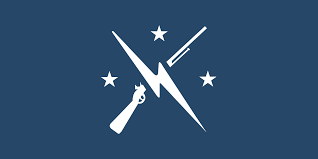
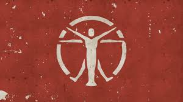

FACTIONS

The Commonwealth is home to several major factions, each with its own goals, ideologies, and methods. Understanding these groups is crucial for navigating the complex political landscape of Fallout 4.
The Commonwealth is home to several major factions, each with its own goals, ideologies, and methods. Understanding these groups is crucial for navigating the complex political landscape of Fallout 4.

The Minutemen are a volunteer militia dedicated to protecting settlements and helping ordinary people survive.
They represent hope and cooperation in a broken world.

The Brotherhood of Steel is a military organization focused on controlling advanced technology.
They believe technology must be controlled to prevent another apocalypse.
The Railroad is a secretive group dedicated to helping synths (artificial humans) escape slavery.
Their actions raise ethical questions about what it means to be human.

The Institute is an advanced scientific organization operating underground.
They are both the most advanced and most controversial faction in the game.